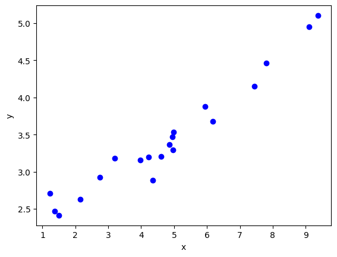
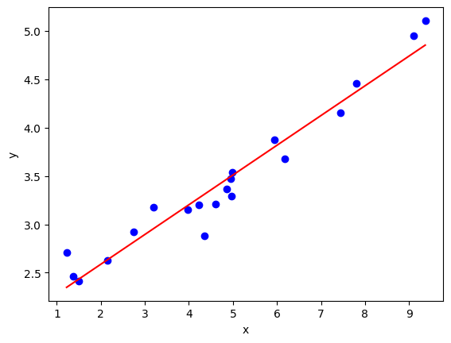
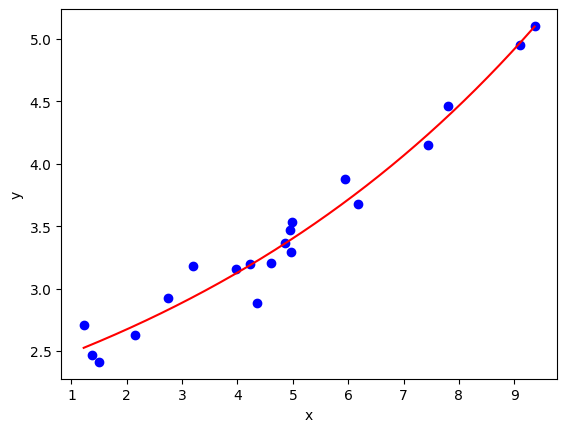
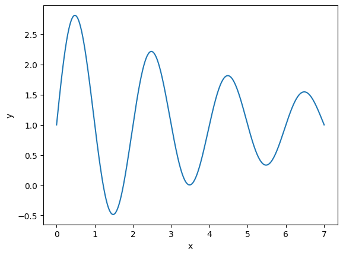
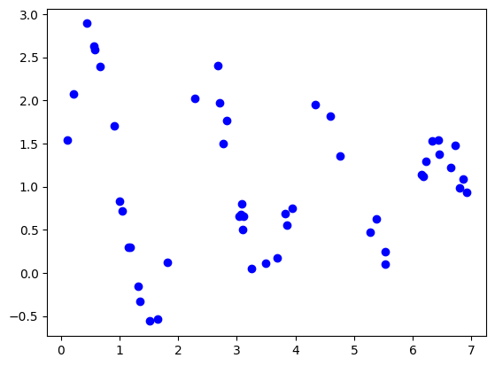
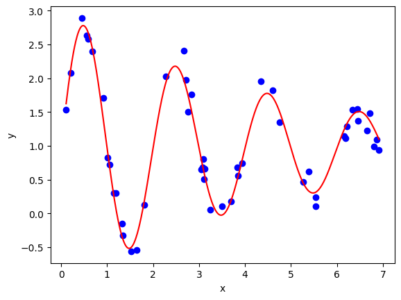
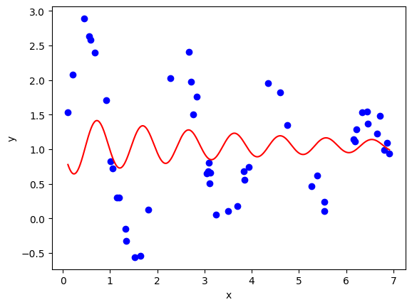
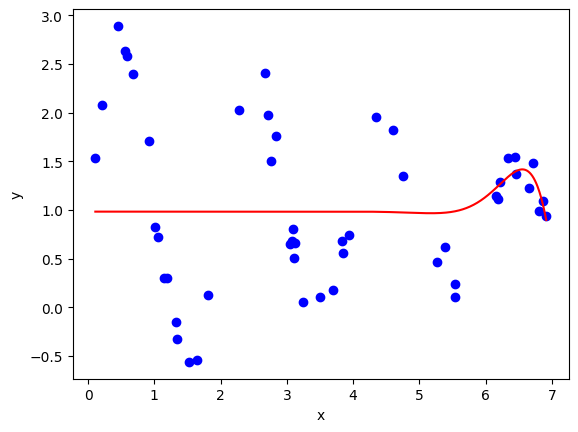
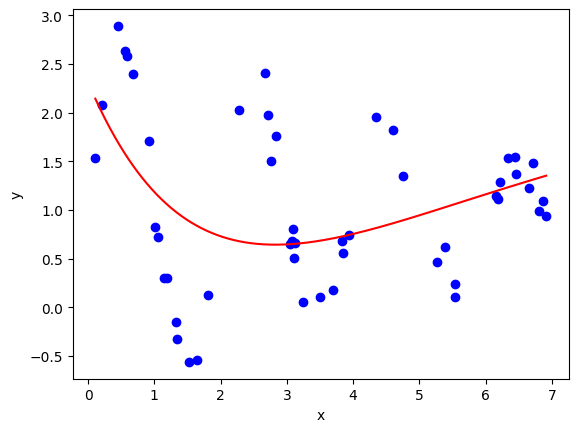

16.2 Non-Linear Least Squares Minimization with scipy.optimize.least_squares#
So far we have only considered functional relationships that are linear in the unknown constants. Non-linear cases are far more complicated and generally require purely numerical solutions. For non-linear cases, we can use the least_squares function from the scipy.optimize submodule.
An Example of a Nonlinear Model#
Consider the data found in the data file nonlinear_data.csv on GitHub , plotted below:

Though the data may appear to follow a linear trend, this is not the case. Consider the linear fit below:

and compare this to a fit using an exponential function as the relation:

Note that this functional relation is non-linear for \(a_2\). Applying the method for least squares minimization to this functional relation will not yield an analytic solution, therefore a numerical method is required. We shall not be implementing this numerical method ourselves, instead using the aforementioned function from SciPy to solve our problem. In essence the numerical minimization technique involves following the negative gradient (or an approximation of this) from a given starting point until a local minimum is found (which is taken as the solution).
Nonlinear Least Squares Minimization with scipy.optimize.least_squares#
Unlike for the linear case, finding the \(a_j\) values which best fit the data will require starting with an initial guess for these values. If possible, it is advised to visualize the model produced by the initial fit and compare it to the data. As we will demonstrate, in certain cases it is possible that the algorithm will not converge on a desired solution if inappropriate initial values are used.
The call signature of least_squares (including only the arguments of immediate interest to us) is:
least_squares(fun, x0, ..., bounds = (-np.inf, np.inf), ..., args = (), kwargs = ())
where
funis a callable object (function) referred to as the “residual”. The squared sum of the return values fromfunis the quantity that is minimized. In the case of least squares minimization, this is the error for each \(y\) variable.The call signature of
funisfun(x, *args, **kwargs), wherexis an array of the \(a_j\) valuesargsis a tuple of additional arguments (the sameargsargument passed into theleast_squaresfunction will be used here)kwargsis a dictionary of additional keyword arguments (the samekwargsargument passed into theleast_squaresfunction will be used here)
x0is an array of the initial guess for our \(a_j\) values.argsa tuple of optional additional arguments to pass intofun. We will mostly use this to pass in the \(y\) and \(x_j\) data.kwargsa dictionary of optional additional keyword arguments to pass intofun.boundsis a tuple of array-like values. If limits should be imposed on allowed \(a_j\) values, then you can set these here. The structure of the limits are \(([a_{0~\text{min}}, a_{1~\text{min}}, \dots, a_{m~\text{min}}], [a_{0~\text{max}}, a_{1~\text{max}}, \dots, a_{m~\text{max}}])\). You can usenp.infif you want to leave a value unbounded.
The return value of the least_squares function is an object with the following fields of interest to us:
x: an array of the solution found for the \(a_j\) values.success: boolean, True if the solution has converged.
Worked Example
Let’s use least_squares to fit the functional relation:
to the nonlinear_data.csv data.
First we shall define the functional relation:
def f(a, x):
return a[0] + a[1] * np.exp(a[2] * x)
and use this to define the residuals. For regular least-squares, we will use the error as the residuals:
in Python this looks like:
def err(a, x, y):
return f(a, x) - y
Note that, if we wanted to make this a bit more generic, we could pass the function f into the err function as an argument.
Putting this into practice:
import numpy as np
import matplotlib.pyplot as plt
#importing scipy.optimize.leastsq only
from scipy.optimize import least_squares
#The model to fit to the data
def f(a, x):
return a[0] + a[1] * np.exp(a[2] * x)
#Residuals (in this case the error term)
def err(a, x, y):
return f(a, x) - y
#Reading the data
# The `unpack` keyword argument seperates the columns into individual arrays
xdata, ydata = np.loadtxt('data/nonlinear_data.csv', delimiter = ',', unpack = True)
#Performing the fit
a0 = [1.5, 0.6, 0.2] #initial guess
fit = least_squares(err, a0, args = (xdata, ydata))
#Plotting the fit and data
x = np.linspace(xdata.min(), xdata.max(), 1000)
plt.plot(xdata, ydata, 'bo')
plt.plot(x, f(fit.x, x), 'r-')
plt.xlabel('x')
plt.ylabel('y')
plt.show()
Solutions Converging on Local Minima#
As mentioned before, the numerical algorithm is complete once it has minimized the objective function (the sum of errors squared in out case) to a local minimum. It is possible for the solution to not represent the global minimum, which is the ideal solution to obtain.
Let’s take a relatively simple example to illustrate this. Consider the functional relation:

Given a set of data characterized by this relation:

It is relatively easy to find a good fit using leastsq:

Here are a couple of examples of solutions that returns a supposedly successful solution, but have obviously not converged to the best fit.


Here is an example of a solution that has not succeeded:

If your model does not fit, try varying the initial guess for the fit parameters.